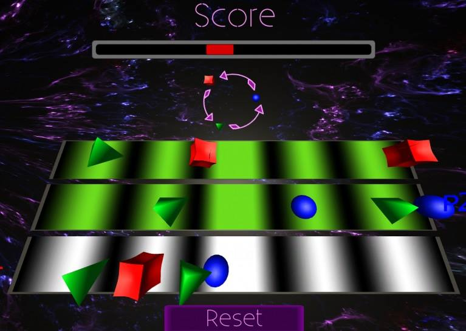
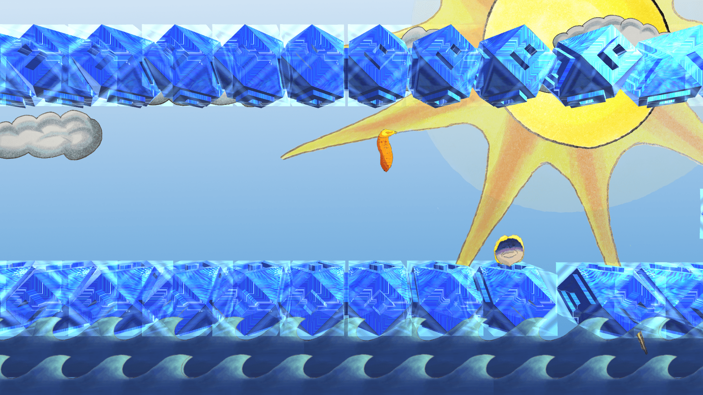
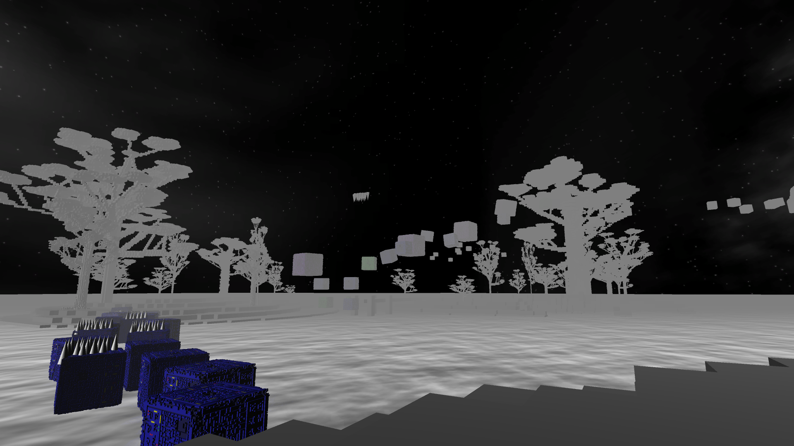

Cadescent Aether is a colourful rock-paper-scissors 2-player game where a player takes on waves of
enemies
using energetic rhythm mechanics that give the game a mix of challenge and strategy. Each player must
navigate between the three lanes and
send out a pair of three shapes to do battle against their foe. Both players have a choice of three
shapes: a sphere, a cube, or a triangular-prism with each shape able to defeat one of the others. The
goal of the game
is to get as many shapes as possible into your opponent's side within the time limit.
Cadescent Aether was made during the 2017 Global Game Jam. I worked alongside 3
other programmers and took on the role of the game mechanics developer. I created and polished the
rock-paper-scissors mechanics and player controls. I also fine-tuned the rules and lane
movement mechanics. As well, I assisted my other team members with work on the menu screen UI and
with general debugging.
Kwasi Asante: Game Programmer/Designer/Level Editor
Kai Ahmed: Project Manager/Game Programmer/Designer/Audio Engineer/Lead Artist/Level
Editor
Kevin Garland: Game Programmer/Designer/QA Tester
Peter Tran: Lead Game Programmer/Designer
Download
Here

Tuber Tyrants is a fun 4-player survival platformer with cartoon visuals and referential humour. Each
player controls a tuber, each representing a political leader, and try to jump on to the oncoming
platforms; the surviving tuber is declared the winner. However, the game will throw random challenges
known as "Alternate Facts" into the game to add difficulty for the players, inviting a more intense
and
exciting experience.
Tuber Tyrants was made during the 2017 PTBO Game Jam. I worked on Tuber Tyrants
with 3 other programmers and an artist, I took the role of the mechanics developer, in which I created
the controls, platform movement, multiplayer functionality and the "Alternate Facts" mechanics; I also
assisted in general debugging.
Kwasi Asante: Game Programmer/Designer/Level Editor
Kai Ahmed: Project Manager/Game Programmer/Designer/Audio Engineer/Level Editor
Kevin Garland: Game Programmer/Designer/QA Tester
Kailee Bryant: Lead Artist
Peter Tran: Lead Game Programmer/Designer
Download
Here

The Forgoatten Isles is a first-person platformer. Players must traverse through a series of
puzzles on three islands to find a key on each island, in order to unlock a grand door and acquire the
secret prize within. The player can run and jump on different cubes to reach the prize, however, some
cubes
behave differently and there are hidden traps all over the islands to add new levels of difficulty and
challenge to the game.
The Forgoatten Isles was created during the 2017 ToJam. I worked on a 5-person team, 3 other
programmers and 1 artist. I was the mechanics developer, creating the mechanics for the different
blocks, the controls, and hidden traps. I also assisted in level editing and debugging
Kwasi Asante: Game Programmer/Designer/Level Editor
Kai Ahmed: Project Manager/Game Programmer/Designer/Audio Engineer/Level Editor
Kevin Garland: Game Programmer/Designer/QA Tester
Kailee Bryant: Lead Artist
Peter Tran: Lead Game Programmer/Designer
Download
Here